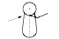
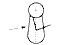
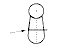
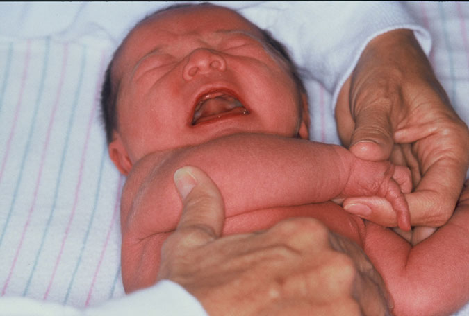

This maneuver tests the passive tone of the flexors about the shoulder
girdle.
With the infant lying supine, the examiner adjusts the infant's head to the
midline and supports the infant's hand across the upper chest with one hand.
the thumb of the examiner's other hand is placed on the infant's
elbow.
The examiner nudges the elbow across the chest, felling for passive flexion
or resistance to extension of posterior shoulder girdle flexor
muscles.
The point on the chest to which the elbow moves easily prior to significant
resistance is noted. Landmarks noted in order of increasing maturity are:
Full scarf at the level of the neck (-1);
Contralateral axillary line
(0);
Contralateral nipple line (1);
Xyphoid process (2);
Ipsilateral
nipple line (3); and
Ipsilateral axillary line (4).
| SIGN | NEURO-MUSCULAR MATURITY SCORE | SIGN SCORE | ||||||
| -1 | 0 | 1 | 2 | 3 | 4 | 5 | ||
| Scarf Sign |  |
 |
 |
 |  |
 |
||
